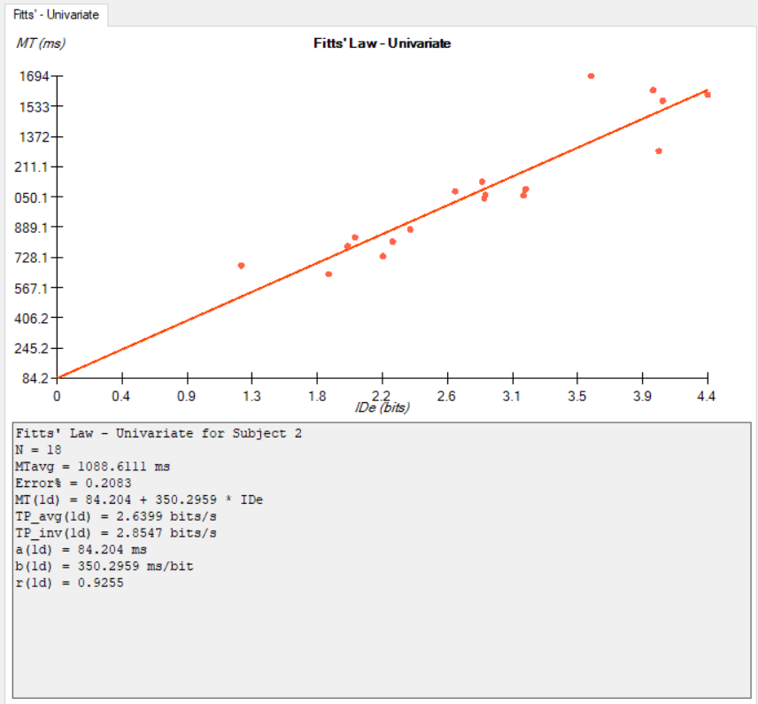

Fitts's Law Study: Young vs. Old
Authors
Phat Vuong and Nhi Vuong
Summary
In this experiment, I wanted to see the performance difference between individuals whose ages are drastically different and see if age is a factor in determining an individual's performance while using a mouse using Fitts' Law. This experiment's test subjects are me, Phat Vuong, age 21, and my sister, Nhi Vuong, age 8. FittStudy by Jake Wobbroke was used to get the results for this experiment.
My Results
My Sister's Results
Conclusion
The results show that the older tester a significantly lower error score with only 6.11% compared to the younger tester score of 20.83%. The older tester's average throughput score was also substantially better than that of the younger test with a score of 4.6238 compared to 2.6399%, respectively.